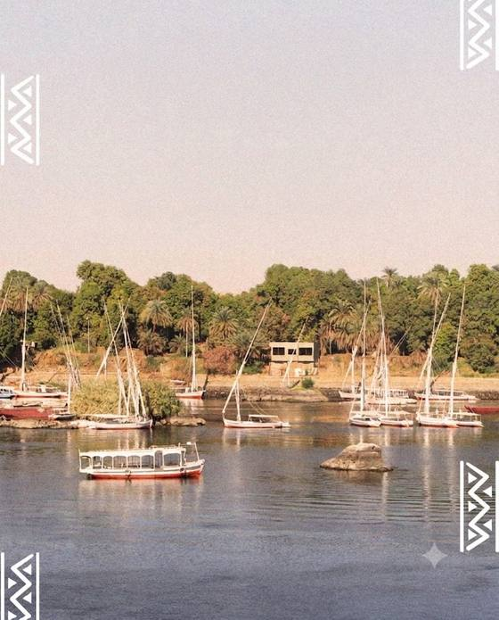

النوبة… حضارة تمتد لآلاف السنين
اكتشف تاريخ النوبة العريق، ثقافتها الفريدة، فنونها، موسيقاها، لغتها، وكرم أهلها على ضفاف النيل في أسوان.
شعبٌ يحمله النيل
شعب يمتدّ جذوره في أعماق التاريخ، يحيا على ضفاف النيل بين أسوان وكرمة، يحمل تراثًا متفردًا في اللغة والفن والعلاقات الاجتماعية.
"أرض الذهب… وأرض القوس" — إرث من القوة والكرم والصمود عبر آلاف السنين، لا يزال ينبض على ضفاف النيل في أسوان.

حفظ المتاحف العديد من النماذج والتماثيل الأثرية التي تُجسّد الجنود النوبيين وهم يحملون الأقواس، لتبقى هذه الآثار شاهدًا حيًا على المكانة التي عُرفت بها النوبة عبر العصور في مهارة الرماية وفنون القتال. وتكشف هذه القطع الأثرية جانبًا مهمًا من تاريخ المحارب النوبي، الذي ارتبط بالقوس والسهم بوصفهما من أبرز أدواته، وتعكس ما امتاز به النوبيون من براعة ودقة في الرماية، وهي مهارات تركت أثرًا واضحًا في المصادر والنقوش القديمة التي تناولت تاريخ النوبة وعلاقاتها بالممالك والحضارات المجاورة.
خمسة آلاف عام على ضفاف النيل
لم تكن النوبة مجرد بقعة جغرافية على خريطة وادي النيل، بل كانت إمبراطورية متّسعة الأثر، حكمت مصر ذاتها ذات يوم، وتركت وراءها إرثًا معماريًا وفنيًا ولغويًا ما زال حيًا حتى اليوم. قام النوبيون ببناء أهرامات أكثر من تلك الموجودة في مصر، واخترعوا ممالك قوية من كرمة إلى كوش ومروي، وأبدعوا أبجدية خاصة، وطوروا تقنيات الحديد والزراعة والنحت.

محطات بارزة
مملكة كرمة
أول دولة مركزية في أفريقيا جنوب الصحراء، اشتهرت بصناعة الفخار الرقيق والعمارة الضخمة مثل "الدفوفة".
كوش
شهدت صعود "الفراعنة السود" الذين حكموا مصر والنوبة معًا (الأسرة الخامسة والعشرون)، وأسّسوا عاصمة عظيمة في نبتة ثم مروي.
مروي
اشتهرت بصناعة الحديد وبناء مئات الأهرامات الجنائزية التي لا تزال قائمة حتى اليوم، وطوّرت لغتها المروية الخاصة.
النوبة المسيحية
في القرن السادس الميلادي تحوّلت الممالك النوبية الثلاث (نوباتيا، المقرة، علوة) إلى المسيحية، وبُنيت الكنائس المزينة بالفريسكو الرائع.
أفول الممالك المسيحية
بدأ الانتشار التدريجي للإسلام في النوبة من خلال التجارة والمعاهدات (مثل اتفاقية البقط)، مما أدى لامتزاج الثقافات وسقوط دنقلا ثم علوة.
الخط الزمني الكامل
صناعة أيدي النوبة
من أغنى الثقافات الأفريقية والمتوسطية، تعبير حي عن تاريخ يمتد لآلاف السنين.
الأزياء النوبية

زي المرأة النوبية التقليدي الطويل الذي يميز هويتها في كل مناسبة. الجرجار الأسود الشفاف يُلبس فوق ملابس ملونة، ويتميز بطوله الذي يجرّ خلف المرأة ليمسح أثر أقدامها.
الجلباب والعمامة
يُعد الجلباب الأبيض من أشهر أزياء الرجل النوبي، ويتميز ببساطته وملاءمته لطبيعة المناخ في جنوب مصر. وتكتمل الإطلالة بالعمامة، وفي بعض المناسبات يُرتدى الصديري النوبي المطرز بزخارف وألوان مستوحاة من التراث النوبي. ويعكس هذا الزي جانبًا مهمًا من الهوية والثقافة النوبية.
تركواز وذهبي
ألوان زاهية مثل التركواز والذهبي تعكس جمال الطبيعة النوبية ودفء ثقافتها، مع نقوش هندسية مستوحاة من التراث تُزيّن الأقمشة والعباءات وتمنحها طابعًا مميزًا.

منازل النوبة (العمارة)
تتميز العمارة النوبية بالقباب الطينية والألوان الزاهية والزخارف الهندسية التي تُرسم يدويًا على الجدران. تُبنى المنازل من الطوب اللبن لتلاؤم مناخ الصحراء الحار، مع أفنية داخلية مفتوحة تعزز التهوية وتجمع العائلة.
تحمل واجهات المنازل رموزًا ونقوشًا متوارثة، فتتحول كل بيت إلى لوحة فنية تعكس ذوق أصحابه وهويتهم الثقافية على ضفاف النيل.
التصميم
تتميز البيوت النوبية بالقباب والأقبية المصنوعة من الجريد والمواد المحلية، بتصميم يساعد على تلطيف الحرارة وتبريد المنزل طبيعيًا، دون الاعتماد الكبير على أجهزة التكييف
الألوان والزخارف
تغلب الألوان البيضاء والزاهية على الواجهات، وتُزيّن برموز شعبية ذات دلالات ثقافية، مثل التمساح للحماية والعقرب لدرء الحسد، إلى جانب الزخارف الهندسية والنقوش النوبية.
المصطبة
تُعد المصطبة مساحة أساسية في البيت النوبي، توجد أمام المنزل وأحيانًا بداخله، وتُستخدم للجلوس والراحة واستقبال الضيوف، وتعكس روح الترابط والضيافة في المجتمع النوبي.


الزفاف النوبي
الزفاف النوبي احتفال يجمع بين الفرح والتراث، ويعكس قوة روابط العائلة وروح المجتمع النوبي. تمتد الاحتفالات لعدة أيام، وتتضمن زفة النيل التي يتوجه فيها العروسان إلى النيل في أجواء احتفالية طلبًا للبركة، إلى جانب مراسم الحناء والأغاني والموسيقى والرقصات الشعبية التي تضفي على المناسبة طابعًا مميزًا.
شروط الارتباط
الأولوية للزواج الداخلي حفاظًا على اللغة والتقاليد، بلا "قايمة"، فالثقة هي الضمان وتُحل الخلافات في "جلسات العرب".
التجهيزات
يُعد الذهب (الشبكة) جزءًا أساسيًا من المهر، ويقدّم العريس "الشيلة" وهي حقيبة هدايا ضخمة من أفخر الثياب.
ليلة الحناء
تبدأ بذبح المواشي وإطعام القرية، وترتدي العروس الساري النوبي الملون بينما تُطبق الحناء وسط الاحتفال.
الزفّة
موكب راقص يرافقه الغناء والتصفيق ورقصات نوبية مميزة، تُؤدى أغانيها باللغتين الفاديجا والكنزية.

حرف النوبة اليدوية
من سعف النخيل إلى الفخار والفضة، تتوارث الأسر النوبية حرفًا يدوية تعبّر عن تاريخ المكان وروح أهله. وتتميز المنتجات بزخارف وألوان مستوحاة من البيئة النوبية، لتجمع بين التراث والجمال والاستخدام اليومي، وتحافظ على مهارات توارثتها الأجيال عبر الزمن.
أسواق القرى النوبية تعرض هذه الحرف يوميًا لأهالي أسوان وزوارها.
الخوص والطباق
تُصنع أطباق الشوربة والكوندا من جريد النخيل، وتُزيّن بألوان زاهية ونقوش بسيطة، وتُستخدم لتقديم الطعام أو كقطع للزينة على الجدران.
الخرز والمشغولات
تتميز الحلي النوبية بالعقود مثل الجرجار، إلى جانب المشغولات الذهبية والفضية كـالزمام والخلاخيل، التي تعكس جمال الأزياء التقليدية.
الفخار
يُعد الفخار من الحرف النوبية القديمة، ومن أشهر منتجاته الزير والقِلال، التي تُستخدم لحفظ المياه وتبريدها طبيعيًا، بتصميمات مستوحاة من التراث النوبي.

السلال الملونة
مصنوعة من سعف النخيل بألوان زاهية متعددة

الفخار المزخرف
أواني فخارية بنقوش هندسية موروثة

الحُلي الذهبية
خرز ومجوهرات تعكس ذوق المرأة النوبي

أسواق التذكارات
دفوف ومنحوتات خشبية وأقواس تقليدية للزوار
الأعياد والمناسبات
يتبادل الجميع التحية بعبارة "كوريج أنجا ناليه" (عيد سعيد)، مع ارتداء الزي التقليدي وإعداد الأطباق الخاصة.
عيد الفطر — ١ شوال
يبدأ بصلاة العيد، تليها زيارة الأقارب وتبادل التحايا والحلويات (الكعك والبسكويت). يُعد طبق "شعرية الحليب" الطبق التقليدي الأساسي في هذا العيد.
عيد الأضحى — ١٠ ذو الحجة
يشتهر بطقوس ذبح الأضاحي وتقديم أطباق تقليدية مثل "الجكوت" و"الكشيد". يرتدي الجميع أبهى ثيابهم، وتتزين النساء بالجرجار النوبي.
يوم النوبة العالمي — ٧ يوليو
يوم مخصص للاحتفال بالثقافة النوبية في جميع أنحاء العالم، ويرمز إلى الوحدة والتراث. يُعتبر الرقم ٧ مقدّسًا في الطقوس النوبية القديمة.

الموسيقى النوبية — روح ضفاف النيل
تُعدّ الموسيقى عصب الحياة النوبية ولغة التواصل بين أهل القرية. تميّزت بسلام خماسي فريد ومقامات خاصة (الكوارد، السبيبة، الليثي، اللامي، السيكاه)، يعزفها أهالي أسوان منذ آلاف السنين.
في كل احتفال وموكب وليلة فرح، تلتقي الآلات الوترية مع الإيقاعات الجسدية لتصنع مشهدًا لا يتكرر.

عناصر الاحتفال
الإيقاع والطار: تبدأ الاحتفالات النوبية بإيقاع الطار والرقص الجماعي الذي يجمع القرية كلها حول الدفوف.
الرقص الشعبي — رقصة الأراجيد: أشهر الرقصات النوبية، وهي رقصة جماعية تعتمد على حركة الأكتاف والتصفيق الإيقاعي المتناغم، تُؤدى في الأفراح والمناسبات الكبرى.
الآلات والإيقاعات
أربع ركائز تشكّل الصوت النوبي المميّز:

الطنبور
آلة وترية نوبية قديمة، تعزف بهدوء السحر وتُرافق الغناء الفردي والمجالس، وتُعدّ من أكثر الآلات ارتباطًا بالروح النوبية.

الطار (الدف النوبي)
إطار خشبي دائري وجلد ممدّد، يعزف على إيقاعه كل موكب ورقصة، وهو صوت الفرح في النوبة بلا منازع.

الإنشاد الجماعي
فرق الإنشاد النوبية تؤدي أغانيها وأهازيجها بأزياء تقليدية ملوّنة أمام المعابد الأثرية وفي المناسبات، يرافقها تصفيق الكفّين ودقّ الأقدام على إيقاع الأغنية، بأصوات متناغمة تحمل حكايات النهر والأجداد.

توارث الدفوف
يتوارث النوبيون العزف على الدفوف والطبول جيلًا بعد جيل، في جلسات غير رسمية يعلّم فيها الكبار الصغار الإيقاعات التقليدية. وتحضر الربابة كذلك في هذا التراث، آلة السَير الوترية التي رافق بها الرعاة والمسافرون النوبيون طرقاتهم وحكاياتهم، وإن ندُر توثيقها بالصورة.
تستخدم الموسيقى النوبية سلّمًا خماسيًا فريدًا يختلف عن السلمين الكبير والصغير في الموسيقى العربية، وهو ما يميّزها ويساعد على تعرّفها من أول سمعة. من أشهر رموزها المعاصرين: محمد منير الذي نقلها للعالمية.
أرشيف الفيديو النوبي
لحظات موثّقة من الأفراح والفن النوبي عبر الأجيال — تصفّح وشغّل
فرح نوبي في البلد
مشاهد من أجواء فرح نوبي في البلد، توثق لحظات من الفرح والاحتفال، وتُبرز جمال الموسيقى والغناء والعادات والتقاليد التي تميز الأفراح النوبية الأصيلة. قسم يوثق جانبًا من الحياة النوبية وروحها الاجتماعية والثقافية في أجواء مليئة بالموسيقى والفرحة والتراث.
الإبداع النوبي جعل من القرية وجهة يقصدها الزوار من مختلف أنحاء العالم، لما تتميز به من ألوان وفنون وعمارة تعبّر عن أصالة الثقافة النوبية. ويشعر الزائر أن هذا الجمال نابع من روح المجتمع نفسه، وهو ما يمنح المكان طابعًا صادقًا ومميزًا.
وجوه حملت اسم النوبة
حراس الهوية

محمد خليل قاسم
روائي وأديبمن أبرز الأسماء في الأدب النوبي الحديث، واشتهر بروايته «الشمندورة» التي تناولت حياة النوبيين وتفاصيل مجتمعهم والتغيرات التي مروا بها، خاصة تجربة التهجير المرتبطة ببناء السد العالي. قدم من خلال الأدب شهادة مهمة على حياة المجتمع النوبي، ولذلك أصبحت أعماله جزءًا مهمًا من الذاكرة الأدبية والتاريخية للنوبة.

حجاج أدول
أديب وروائي ومسرحيأحد أبرز الأصوات الأدبية النوبية المعاصرة، تناول في كتاباته قضايا الهوية والانتماء والتهجير والخصوصية الثقافية للنوبة. كتب في الرواية والقصة والمسرح، واستطاع أن يجعل القضية النوبية حاضرة في الأدب المصري والعربي. كما عُرف بمواقفه المدافعة عن الثقافة والهوية النوبية وحقها في الحضور داخل المشهد الثقافي المصري.

إدريس علي
روائي وقاصروائي وقاص نوبي بارز، ركز جانب كبير من إنتاجه الأدبي على الإنسان النوبي وتجربة التهجير وقضايا التهميش والهوية. من أشهر أعماله رواية «دنقلة» التي تناولت عالم النوبة والتحولات الاجتماعية والنفسية التي عاشها أبناؤها. استطاع من خلال أعماله أن ينقل تفاصيل الحياة النوبية إلى القارئ العربي، وأن يجعل الأدب وسيلة للتعبير عن الذاكرة والهوية والانتماء.

حسن نور
أديب وروائي نوبيأديب وروائي نوبي اهتم في أعماله بتوثيق حياة المجتمع النوبي والتحولات التي مر بها، خاصة تجربة التهجير وآثارها على الإنسان والثقافة والهوية. ومن أعماله رواية «بين النهر والجبل»، التي تنتمي إلى الأدب النوبي وتتناول جوانب من الحياة والذاكرة النوبية.

يحيى مختار
روائي وقاص ومؤرخ للتراث النوبيمن أبرز الأدباء والباحثين المهتمين بالتراث النوبي. وُلد في الجنينة والشباك بالنوبة القديمة، وظلت النوبة حاضرة بقوة في كتاباته وأبحاثه. اهتم بتوثيق الحكايات والعادات والتقاليد والذاكرة الشعبية، ولذلك عُرف بلقب «مؤرخ التراث»، وأسهم في الحفاظ على جانب مهم من الذاكرة الثقافية النوبية.

مختار محمد خليل كبارة
باحث في اللغة والآثارباحث نوبي اهتم منذ صغره باللغة والتراث النوبي. درس الآثار، وحصل على الدكتوراه في علم المصريات من جامعة بون بألمانيا. كرّس جانبًا مهمًا من حياته لدراسة اللغة النوبية وتوثيقها، واشتهر بكتابه «اللغة النوبية.. كيف نكتبها؟»، الذي تناول قواعد الكتابة باللغة النوبية وسعى إلى توفير وسيلة عملية لتدوينها والحفاظ عليها.

إبراهيم شعراوي
أديب وشاعر وباحث في التراث النوبيمن أهم رواد الأدب النوبي، وعُرف بلقب «شيخ أدباء النوبة». اهتم بتوثيق الحكايات الشعبية والأساطير والفلكلور والعادات والتقاليد النوبية، وجعل من الأدب وسيلة للحفاظ على الذاكرة الثقافية للمجتمع النوبي. أسهمت أعماله في التعريف بالأدب النوبي وإبراز خصوصيته داخل المشهد الأدبي المصري.

محيي الدين صالح
شاعر وأديب وباحث في الثقافة النوبيةمن الشخصيات المهمة في الحركة الأدبية والثقافية النوبية. اهتم بالشعر والأدب ودراسة التراث، وساهم في توثيق أعمال عدد من الأدباء والمبدعين النوبيين. ارتبط نشاطه بالحفاظ على الذاكرة الثقافية والهوية النوبية، وجعل من الكتابة والبحث وسيلة لتوثيق تاريخ المجتمع النوبي وثقافته.
سفراء النوبة

خضر العطار
مطرب وحافظ للتراث النوبيمن أبرز الأصوات في تاريخ الأغنية النوبية، ارتبط فنه بالتراث والذاكرة الشعبية للنوبة. عبّرت أعماله عن الحياة النوبية والحنين إلى القرى القديمة، وحملت الكثير من ملامح الثقافة واللغة والإيقاعات النوبية. ساهم في نقل الأغنية النوبية إلى أجيال جديدة والحفاظ على حضورها كجزء من الهوية الثقافية للنوبة.

محمد فوزي
مطرب نوبييُعد محمد فوزي واحدًا من أبرز أصوات الأغنية النوبية الحديثة، ومن أبناء قرية بلانة بمركز نصر النوبة في أسوان. عُرف بين محبيه بألقاب مثل «الإمبراطور» و«صانع السعادة» و«أبو زيزو»، وبدأ رحلته مع الفن منذ سنواته الأولى من خلال العزف والغناء. استطاع أن يقدم الأغنية النوبية بروح عصرية تجمع بين أصالة التراث وروح التجديد، مع الحفاظ على هويتها ومفرداتها الموسيقية والثقافية، وقدم ألوانًا متنوعة من الأغاني النوبية والمصرية والسودانية. شارك مع فرقته في حفلات ومناسبات داخل مصر وخارجها، منها الكويت والسعودية وعُمان، وأسهم في نقل الثقافة والموسيقى النوبية إلى جمهور أكبر، وترك بصمة واضحة في مسيرة الأغنية النوبية المعاصرة.

أحمد منيب
ملحّن ومطربمن أهم رواد الموسيقى والغناء النوبي الحديث، وصاحب تأثير كبير في تطور الأغنية النوبية المعاصرة. قدم ألحانًا مستوحاة من التراث الموسيقي النوبي مع تطويرها بأسلوب حديث، وكان له تأثير واضح على عدد من الفنانين، ومن أبرزهم محمد منير. لذلك يُنظر إليه باعتباره أحد أهم الأساتذة الذين ساهموا في تشكيل مدرسة الأغنية النوبية الحديثة.

حمزة علاء الدين
عازف عود وملحن ومطرب عالميفنان نوبي عالمي ساهم في نقل الموسيقى النوبية من نطاقها المحلي إلى المسارح العالمية. تميز بعزفه على العود وبأسلوبه الذي جمع بين التراث النوبي والتجارب الموسيقية العالمية. قدم حفلات وأعمالًا في عدد من دول العالم، وأسهم في تعريف الجمهور في الولايات المتحدة واليابان وأوروبا بجمال الموسيقى والثقافة النوبية.

حسن جزولي
مطرب وفنان نوبيمن رواد الأغنية النوبية، وُلد عام 1936 في قرية قورة بإنيبا في النوبة القديمة. بدأ مسيرته الفنية في خمسينيات القرن العشرين، وارتبطت أعماله بالغناء النوبي والتراث الشعبي والتقاليد المحلية. قدم فنه داخل مصر وخارجها، وساهم في الحفاظ على حضور الأغنية النوبية وانتقالها إلى أجيال جديدة.

محمد عثمان وردي
مطرب وملحن وشاعر نوبي سودانيأحد أعظم رموز الفن النوبي والسوداني في القرن العشرين. وُلد في وادي حلفا شمال السودان، وهي منطقة ذات جذور نوبية عريقة. قدم أعمالًا باللغتين النوبية والعربية، وجمع في موسيقاه بين التراث النوبي والتجديد الموسيقي. تجاوز تأثيره حدود السودان، وأصبح أحد أبرز الأصوات التي عرّفت الجمهور العربي والعالمي بالموسيقى النوبية السودانية.

محمد منير
مطرب وملحّنيُعد محمد منير واحدًا من أشهر أبناء النوبة وأكثر الشخصيات تأثيرًا في الموسيقى المصرية الحديثة. استطاع أن يقدم الموسيقى والإيقاعات النوبية إلى جمهور واسع داخل مصر وخارجها، ودمجها مع أنماط موسيقية مختلفة مثل الجاز والروك والموسيقى الأفريقية. أصبح أسلوبه الفني المميز علامة خاصة به، وساهم في جعل الهوية النوبية جزءًا حاضرًا بقوة في المشهد الموسيقي المصري والعربي.

علي كوبان
مطرب وموسيقار نوبيمن أهم رواد الموسيقى النوبية الحديثة، وُلد في قورة بالنوبة القديمة، وارتبط اسمه بتطوير الأغنية النوبية وتقديمها بأسلوب موسيقي حديث. ساهم في دمج الإيقاعات والألحان النوبية مع تأثيرات موسيقية مختلفة، كما لعب دورًا مهمًا في انتشار الموسيقى النوبية خارج مصر. ويُعد من أبرز الرموز الفنية التي ساهمت في وصول الفن النوبي إلى جمهور عالمي.

بحر أبو جريشة
مطرب وفنان نوبيمن الفنانين المرتبطين بالأغنية الشعبية والتراث الموسيقي النوبي. ساهم من خلال أعماله في الحفاظ على حضور الألحان والإيقاعات الشعبية، وارتبط فنه بالثقافة المحلية والهوية النوبية. يمثل أحد الأصوات التي جمعت بين الطابع الشعبي والتعبير عن التراث والذاكرة النوبية.
قادة صنعوا التاريخ

المشير محمد حسين طنطاوي
مشير ووزير دفاعقائد عسكري مصري بارز من أصول نوبية، تولى منصب وزير الدفاع والإنتاج الحربي ورئاسة المجلس الأعلى للقوات المسلحة. شارك في عدد من الحروب التي خاضتها مصر، وكان من أبرز القادة العسكريين في تاريخ مصر الحديث. تولى إدارة البلاد خلال المرحلة الانتقالية عقب ثورة يناير 2011، ولعب دورًا محوريًا في الحفاظ على مؤسسات الدولة خلال تلك الفترة.

أحمد إدريس
بطل حرب أكتوبرجندي نوبي من أبناء أسوان، ارتبط اسمه بفكرة استخدام اللغة النوبية في تأمين الاتصالات العسكرية خلال حرب أكتوبر 1973. قدم فكرته للقيادة العسكرية، واستُخدمت كلمات من اللغة النوبية كوسيلة لتشفير بعض الاتصالات، مستفيدين من عدم فهم القوات الإسرائيلية لهذه اللغة. أصبحت قصته واحدة من أشهر القصص المرتبطة بدور أبناء النوبة في حرب أكتوبر.

زكي مراد
سياسي ومثقف وشاعرشخصية نوبية بارزة جمعت بين النشاط السياسي والعمل الثقافي والأدبي. شارك في الحركة الوطنية المصرية، واهتم بالقضايا السياسية والاجتماعية، كما ارتبط اسمه بالحياة الثقافية النوبية. يمثل نموذجًا للمثقف النوبي الذي جمع بين الدفاع عن قضايا المجتمع والمشاركة في الحياة العامة المصرية.
الإيقاع واللسان والروح على ضفاف النيل
تتميز الحياة النوبية بنمط فريد يجمع بين بساطة العيش والارتباط الوثيق بالنيل، فمن إيقاع الحياة اليومية على ضفافه إلى لغة الأجداد الحيّة، يتشكل نسيج متكامل يعكس أصالة الهوية النوبية وثراء ثقافتها الممتدة عبر الأجيال..
الطنبور صوت الحكاية، والدف نبضها، والنوبة ذاكرة لا تنقطع.
فالموسيقى النوبية ليست مجرد ألحان وإيقاعات، بل تعبير عن هوية متجذرة في المكان، تحكي علاقة الإنسان بأرضه ونيله وتراثه. ومع كل نغمة من الطنبور، وكل ضربة على الدف، يستمر صوت النوبة حيًّا؛ يحمل حكايات الماضي، وروح الحاضر، ويمنح الأجيال القادمة ذاكرةً موسيقية نابضة بالأصالة والانتماء.
"كل نغمة وإيقاع، تستمر حكاية النوبة حاضرةً في القلوب، تحمل عبق الماضي وروح المكان من جيل إلى جيل."

طبيعة العمل (الكدح الهادئ)
الزراعة والصيد: ارتبط العمل تاريخيًا بالأرض والنيل؛ زراعة النخيل والحبوب هي الحرفة الأساسية، وصيد الأسماك جزء أصيل من المعيشة.
الحرف اليدوية: تبدع النساء في صناعة الخوص والأطباق الملونة والمشغولات الخرزية، وهي مهنة تتوارثها الأجيال.
السياحة المجتمعية: أصبح استقبال السياح في البيوت النوبية الملونة وتقديم التراث جزءًا حيويًا من العمل اليومي.

روتين الحياة (إيقاع الطبيعة)
التبكير: يبدأ اليوم مع خيوط الفجر الأولى، حيث الهدوء والسكينة هما سيدا الموقف.
جلسة المصطبة: ركن أساسي في كل بيت نوبي، وهي مكان التجمع اليومي لتناول الشاي باللبن وتبادل الأحاديث.
العمارة النفسية: تصميم البيت بأسقفه العالية وألوانه الزاهية ينعكس على نفسية السكان، فيجعل الروتين مريحًا وغير ضاغط.
الاحترام الهرمي
لكبار السن مكانة مقدسة، وكلمة "الكبير" مسموعة ومطاعة، مما يحافظ على استقرار المجتمع.
الأمان والخصوصية
تمتاز القرى النوبية بخصوصية عالية وأمان كبير، فالكل يعرف الكل، وهذا يخلق بيئة تربوية مثالية.
الكنزية والفاديجا… تراث حيّ
يحفظ النوبيون لهجتين رئيسيتين توارثوها أبًا عن جد: الكنزية في الشمال، والفاديجا في الجنوب، وهما وعاء حيّ لنقل التراث الشفهي والقصص والأمثال. استُخدمت اللغة النوبية كشفرة عسكرية في حرب أكتوبر ١٩٧٣ بفضل تعقيدها على العدو، وهي اليوم منارة هوية وحصن ثقافي يحمي الذاكرة النوبية من الذوبان.
"اللغة ليست كلمات فقط… هي بيتٌ نعيش فيه" ✦
لعبة تعلّم سريعة
خمّن مقابل الكلمة العربية باللهجة الفاديجا في خمس جولات.
حكايات توارثها الأجداد

قصة شفرة الحرب (البطولة الصامتة)
من أشهر القصص التي يفتخر بها النوبيون هو دور لغتهم في حرب أكتوبر ١٩٧٣. اقترح أحمد إدريس، نوبي من قرية توماس وعافية، استخدام اللغة النوبية كشفرة عسكرية لأن العدو لن يستطيع فك رموزها، وكانت السر الذي أمّن الاتصالات المصرية.

أسطورة تمساح النيل الصديق
في قرية غرب سهيل، يحكي الأجداد أن التمساح ليس وحشًا بل بركة النيل. كان النوبي يصطاد التمساح الصغير ويربيه في حوض بالمنزل ليحمي البيت من الحسد، وعند موته يُحنّط ويُعلّق فوق الباب كحارس للمنزل.

حكاية السبوع والنيل (المعمودية النوبية)
بعد ولادة الطفل بسبعة أيام، تأخذه الأم في موكب مع نساء القرية إلى شاطئ النيل، وتغسل وجهه بمياهه، وترمي الفشار والبلح في الماء كهدية للنهر لضمان أن يعيش الطفل حياة رخاء.

قصة البيت المفتوح (كرم الفطرة)
كانت أبواب البيت النوبي القديم تُبنى طويلة ومفتوحة دائمًا، ليس فقط للتهوية بل ليرى العابرون صينية الطعام في وسط الدار؛ فمن شيم النوبي أنه لا يأكل وحده، ويشارك أي غريب الجاكود والخبز.

حكايات الشمندورة والعودة
بعد تهجير النوبيين عند بناء السد العالي، ولدت قصص كثيرة حول الشمندورة (فانوس يرشد المراكب) كرمز لغرق القرى القديمة، بينما ظل النوبيون يروون لأبنائهم حكايات البلاد القديمة وأسماء النخيل الذي تركوه هناك.
ذاكرة تُروى.. ولغة تُكتب

النوبة: حكايات وذكريات
يأخذنا كتاب «النوبة: حكايات وذكريات» إلى عالم النوبة من خلال ذاكرة أهلها وحكاياتهم، مستعرضًا تفاصيل الحياة النوبية القديمة، والعادات والتقاليد، والتراث الشعبي، وملامح المجتمع النوبي.
يقدم محيي الدين شريف صورة وجدانية للنوبة، لا باعتبارها مكانًا فحسب، بل باعتبارها ذاكرة وهوية وثقافة متوارثة. وتظهر في الكتاب علاقة المؤلف العميقة بموطنه واهتمامه بالفن والفلكلور والموسيقى والحكايات الشعبية.
يمثل الكتاب مصدرًا مهمًا لفهم جانب من الذاكرة الاجتماعية والثقافية للنوبة، ويساهم في حفظ الحكايات والتفاصيل التي انتقلت عبر الأجيال شفهيًا.
فتح الكتاب (PDF)

اللغة النوبية: كيف نكتبها؟
يتناول كتاب «اللغة النوبية: كيف نكتبها؟» موضوع اللغة النوبية من زاوية مختلفة، حيث يركز على الكتابة والتدوين والأبجدية والنطق والأرقام، في محاولة لتقديم منهج يساعد على تعلم اللغة النوبية وكتابتها بصورة أكثر تنظيمًا.
ويرتبط العمل باهتمام الدكتور مختار خليل كبارة باللغة النوبية ودراستها وتوثيقها، ويُعد من الأعمال التي تسهم في الحفاظ على اللغة باعتبارها جزءًا أساسيًا من الهوية والتراث النوبي.
يساهم الكتاب في دعم جهود توثيق اللغة النوبية وتعليمها والحفاظ عليها من الاندثار، وتحويل المعرفة اللغوية المتوارثة شفهيًا إلى مادة يمكن دراستها وتدوينها ونقلها إلى الأجيال القادمة.
ذاكرة تُروى... ولغة تُكتب
يمثل العملان جانبين متكاملين من الهوية النوبية: «حكايات وذكريات» تحفظ ذاكرة المجتمع وثقافته، بينما «اللغة النوبية: كيف نكتبها؟» تسعى إلى حفظ اللغة وأدوات التعبير عنها. وبين الحكاية واللغة، تستمر جهود توثيق التراث النوبي وحمايته ونقله إلى الأجيال القادمة.
في كل صورة… حكاية
جولة بصرية بين القرى النوبية، الناس، الموسيقى، الحرف، والطبيعة — كل صورة في هذا المعرض من قلب الحياة النوبية.
نكهات الأرض والنهر
نكهات طبيعية تعتمد على محاصيل البيئة المحلية مثل القمح والذرة والكركديه، وتعتمد بشكل أساسي على "الويكة" (البامية المجففة المطحونة) ومرق اللحم الدسم.
أشهر الأطباق

الجاكود
مرقة من البامية المجففة مع مرق الضأن والخضروات.

الكاشيد
لحم محمّر مع البصل والسمن، من أطباق المناسبات الرئيسية.

الأرتي (البامية المفروكة)
بامية خضراء طازجة مع الكزبرة والشبت، تُهرس يدويًا.
المعجنات والمخبوزات
الخبز هو "سيد المائدة" في النوبة، وتتنوع أشكاله حسب طريقة الطهي:

الملتوت
العيش الشمسي.. تراث فرعوني قديم احتكره صعيد مصر

الخمريت
خبز رقيق وطري، يؤكل غالبًا مع العسل أو المرق.
معابد ونيل وقرى لا يبليها الزمن
تمتزج فيها المعابد الشامخة بجمال النيل وقرى تحكي حياة أصيلة لم تتغير.
المعالم التاريخية

معبد أبو سمبل
أعظم معابد رمسيس الثاني المنحوتة في الصخر

معبد فيلة
لؤلؤة النيل المخصصة للإلهة إيزيس

متحف النوبة
يضم آلاف القطع التي توثّق تاريخ المنطقة
القرى النوبية

غرب سهيل
القرية الأشهر ببيوتها الملونة وتجربة ركوب الجمال

جزيرة هيسا
هدوء تام وسط صخور النيل الجرانيتية
أفضل وقت للزيارة
أفضل وقت للزيارة بين شهري أكتوبر ومارس، حيث الجو معتدل ومناسب لجولات المعابد والقرى.
اقتراح رحلة ٣ أيام
أسوان والنيل
نزهة بالمركب الشراعي على النيل، وزيارة قرية غرب سهيل الملونة.
فيلة والمتحف
معبد فيلة صباحًا، ثم متحف النوبة لاستكشاف تاريخ المنطقة.
أبو سمبل
رحلة إلى معبدَي أبو سمبل، مع وقت هادئ عند جزيرة هيسا إن أمكن.
أصوات من أرض النوبة
أسئلة يتكرر طرحها
كل إجابة هنا مبنية على محتوى موثّق في أقسام الموقع نفسها، وليس من مصدر خارجي — اضغط على الرابط داخل أي إجابة للوصول للقسم كاملاً.
اختبر نفسك في تراث النوبة
خمسة أسئلة سريعة لتختبر معرفتك بتاريخ النوبة وثقافتها.